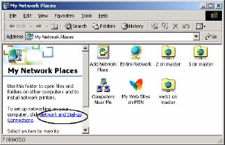
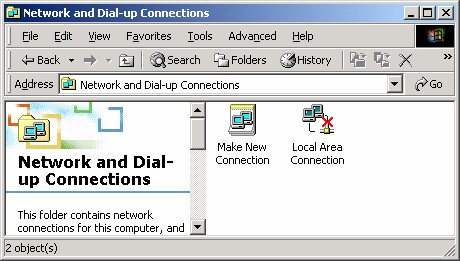
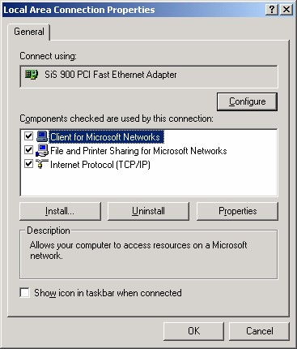
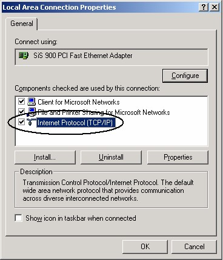
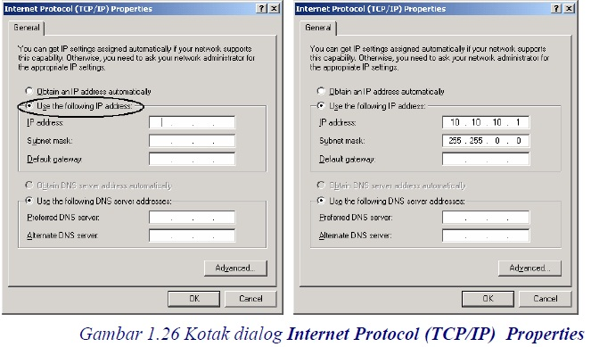

4 Mengatur Protokol
Setelah restart, kini Anda telah memiliki nama jaringan untuk komputer Anda
(master) dan telah menentukan workgroup mana yang akan digandeng (zenith).
Selanjutnya kita perlu mengatur protokol, yaitu aturan-aturan yang harus ditaati agar
komunikasi jaringan bisa terlaksana. Jenis protokol yang digunakan adalah TCP/IP.
Adapun langkah pengaturan-nya adalah:
1. Pada Desktop klik ganda icon My Network Places. Muncul window My
Network Places, lihat Gambar 1.22.

Gambar 1.22 My Network Places
2. Klik link Newtwork and Dial-upConnection. Lihat Gambar 1.22 di atas.
Muncul Newtwork and Dial-upConnection. Gambar 1.23.

Gambar 1.23 Newtwork and Dial-upConnection
3. Klik ganda icon Local Area Connection, muncul kotak dialog Local Area
Connection Properties. Gambar 1.24.

Gambar 1.24 kotak dialog Local Area Connection Properties
4. Klik icon Internet Protocol (TCP/IP). Lihat Gambar 1.25 di bawah ini:

Gambar 1.25 icon Internet Protocol (TCP/IP)
5. Klik tombol Properties, muncul kotak dialog Internet Protocol (TCP/IP)
Properties. Gambar 1.26.

6. Pada kotak isian IP Address isikan alamat IP berupa empat angka. Misalnya
10.10.10.1.
7. Pada kotak isian Subnet mask isikan alamat Subnet berupa empat angka. seperti
alamat IP, misalnya 255.255.0.0.
Kedua angka alamat tersebut sebaiknya Anda tanyakan ke administrator jaringan,
sebab sudah ada ketentuannya. Namun jika ingin mencoba membangun sendiri
jaringan mini dua atau tiga komputer Anda sendiri, gunakan saja angka contoh di
atas atau angka lainnya.
8. Klik OK kembali ke kotak dialog Local Area Connection Properties.
9. Klik OK.
Copyright © Herlan Lesmana
Created with the Freeware Edition of HelpNDoc: Full featured Documentation generator